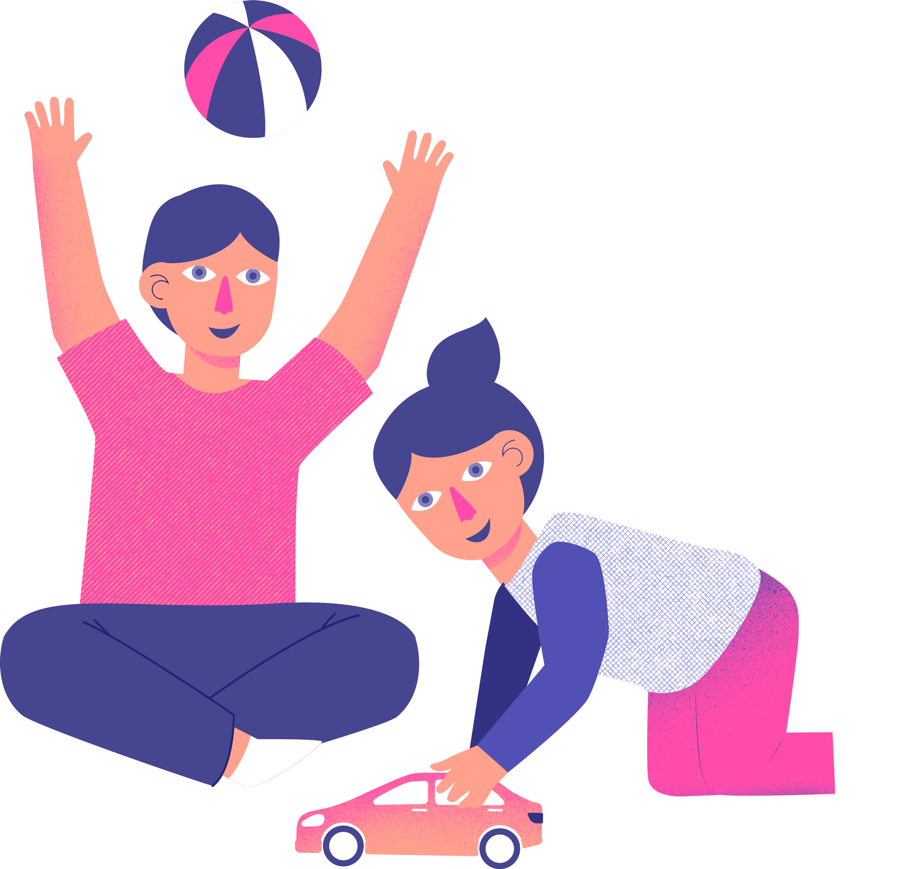
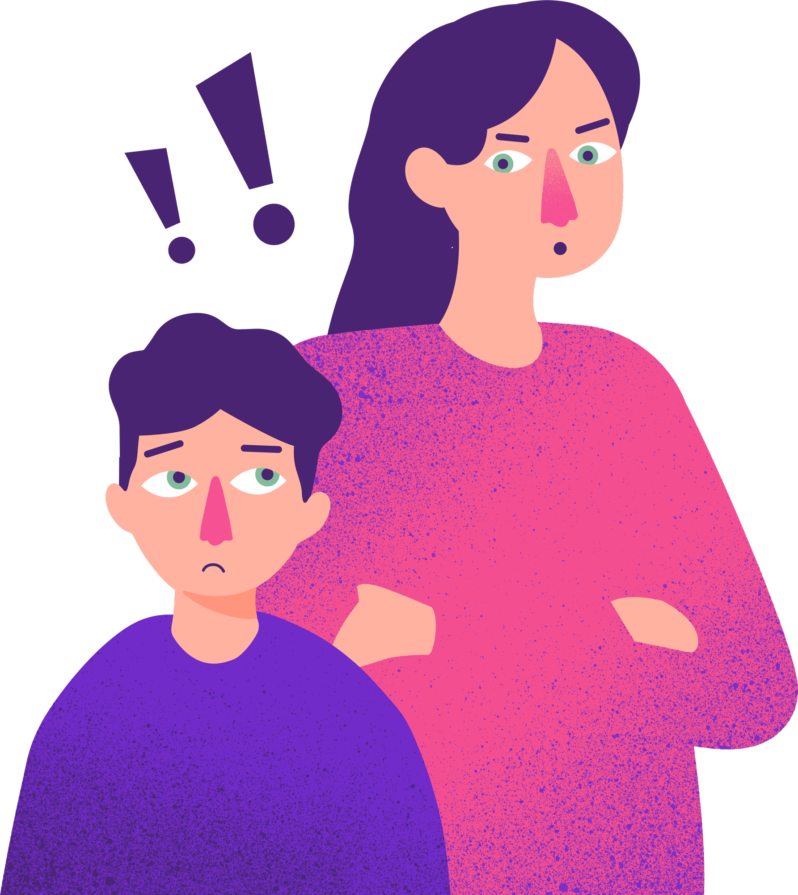
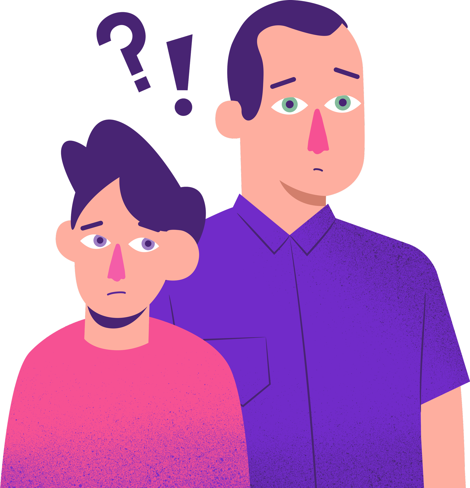
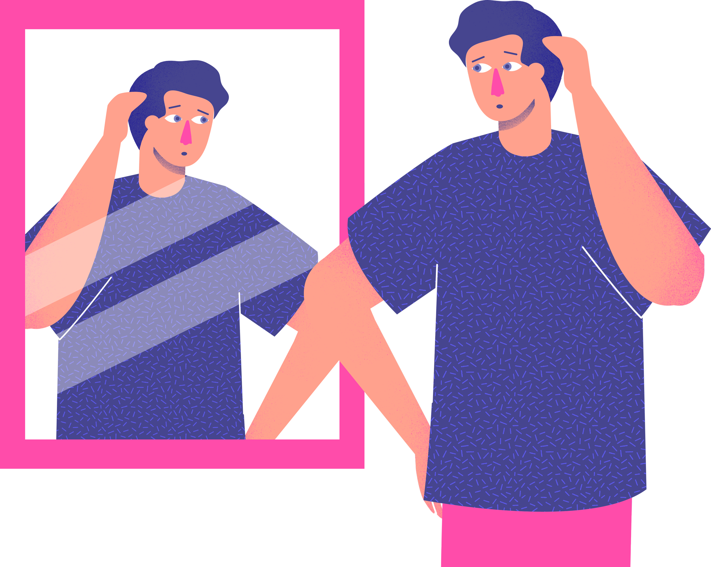

Potřeby dětí
Proč děti potřebují oba rodiče
Zjistěte, proč je důležité, aby děti měly vztah s oběma rodiči, a jak to ovlivňuje jejich vývoj.
Číst více →Rozvod nebo rozchod patří mezi nejnáročnější situace, jakými můžeme během života projít.
Na děti má rozpad rodiny vždy vliv. Jako rodiče ale máte možnost pomoct jim tento těžký čas dobře zvládnout.
✓ Více než 500 rodičů prošlo našimi kurzy

Od 1. ledna 2026 platí nová pravidla. Už neexistuje "výlučná" nebo "střídavá" péče. Zjistěte, co to pro vás znamená.
Přečíst článek →Praktický online kurz od odborníků ze SPONDEA vás naučí, jak mluvit s dětmi o rozvodu rodiny, abyste minimalizovali negativní dopady a pomohli jim tento období co nejlépe zvládnout.

Ať je jim pět nebo patnáct, většinou poznají, že se něco děje. Když jim to neřeknete, vymyslí si svou vlastní verzi, která je pravděpodobně horší než realita.

Nejvíc dětem ubližuje dlouhodobý konflikt mezi rodiči, ne samotný rozvod. Ukážeme vám konkrétní kroky, jak snížit napětí a nastavit zdravou komunikaci.

Rozvod je těžký pro všechny. Ale s pomocí odborníků a praktických nástrojů můžete dětem poskytnout stabilitu a jistotu, kterou v této době potřebují.

Nejste na to sami. Náš kurz vám poskytne jasné odpovědi, praktické návody a podporu, kterou potřebujete.
Praktické články, které vám pomohou zorientovat se v nové situaci
Zjistěte, proč je důležité, aby děti měly vztah s oběma rodiči, a jak to ovlivňuje jejich vývoj.
Číst více →Realita, kterou nelze změnit: budete se muset domlouvat ještě minimálně 10-15 let.
Číst více →Nové zákony přinesly zásadní změny. Zjistěte, co je jinak a jak to ovlivní vaši situaci.
Číst více →Pokud se postaráte o sebe, ukážete dětem, že i v krizi se dá najít síla.
Číst více →V našem online kurzu "Jak mluvit s dětmi o rozpadu rodiny" se naučíte:
"Kurz mi pomohl pochopit, jak moje děti vnímají rozvod. Naučila jsem se s nimi mluvit otevřeně, aniž bych jim ublížila."
— Jana, matka dvou dětí